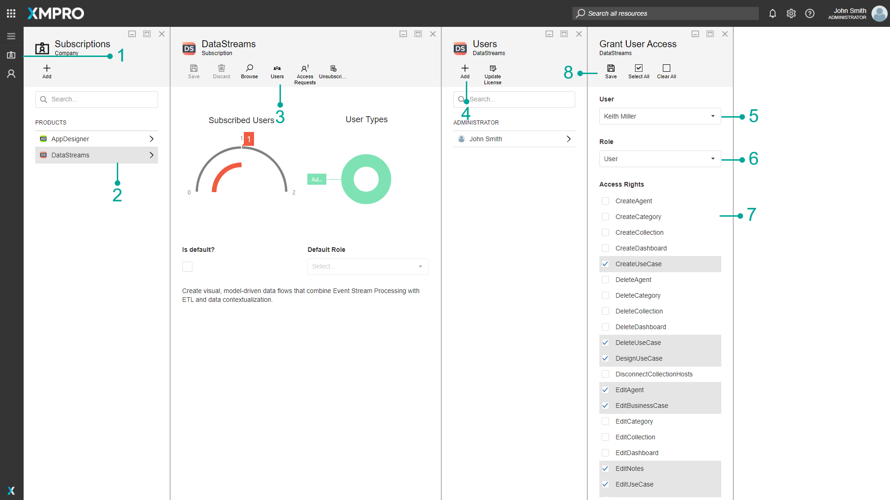
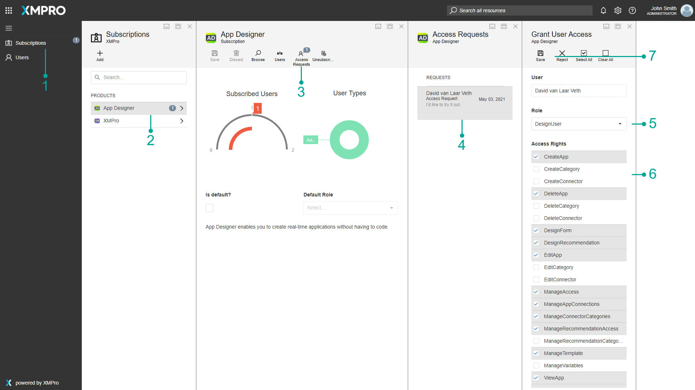
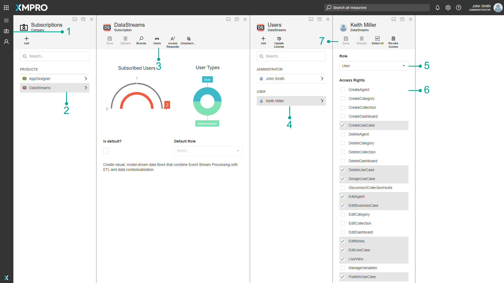
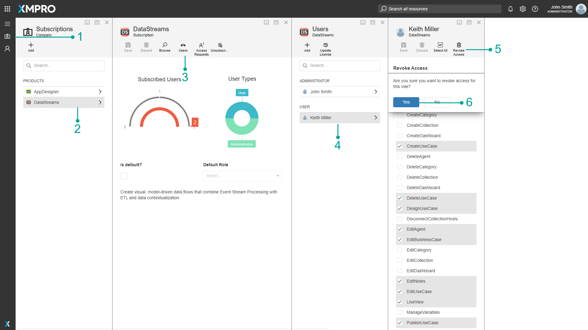

Manage User Access
Warning
Please note that this section is intended for Administrative users. No other type of user is allowed to manage a Company's Subscriptions.
Adding Users to a Subscription
Follow the steps below to give access to a product for a user in a company other than XMPro.
- Open the Subscriptions page from the left-hand menu.
- Click on the product the user needs access to.
- Click the Users button in the command bar.
- Click on Add.
- Select the user from the drop-down.
- Select a role for the user.
- Select the rights the selected user needs on the product.
- Click Save.
- The user will receive an email that access has been granted for the selected product.

Approve User Access Request
If there is no Auto Approval or Default Subscription setup, the Admin needs to approve a user's Access Request.
If someone in your company lodged an access request for a product, an email will be sent to all Company Administrators within your company. The first available person with an administrative role within the Subscription Manager can approve the request. To approve an access request for a user, please follow the steps below.
- Open the Subscriptions page from the left-hand menu.
- Select the product for which the access request was lodged. A counter next to the product name will indicate the number of pending access requests you have for that product.
- Click on Access Requests.
- Click on the name of the user that lodged the request.
- Select the role that the user should have on the product from the drop-down, for example, "General User".
- Select the rights the user should have on the product, for example, the rights and roles for Data Stream Designer or rights and roles for the App Designer.
- Click Save.
- The user who lodged the request will receive an email notifying him/ her that they have been granted access to the product.

Editing Rights and Access for a User
If you need to edit rights for a user or a user's role on a product, follow the steps below.
- Open the Subscriptions page from the left-hand menu.
- Select the product that you are looking to change a user's rights or access.
- Click Users in the command bar to open the Users page.
- Select the user whose rights or role you would like to change on a product.
- Make any changes to the role of the selected user, as required.
- Make any changes to the rights of the selected user, as required.
- Click Save.

Note
Advise the user to sign out and back in again for the changes to take effect.
Removing Access for a User
If you need to remove access for a user on a product, follow the steps below.
- Open the Subscriptions page from the left-hand menu.
- Select the product that you are looking to revoke a user's access.
- Click Users in the command bar to open the Users page.
- Select the user whose rights or role you would like to change on a product.
- Click Revoke Access.
- Confirm that you would like to remove access for the selected user on the selected product by clicking Yes.

Data Stream Designer Rights and Roles
Several rights are maintained in Subscription Manager for Data Stream Designer. Each of these rights represents an aspect of the Data Stream Designer system that a user is allowed to see or access. Persons with administrative rights in Subscription Manager manage all rights.
Data Stream Designer Rights
The table below lists the rights that can be assigned to a user.
| Right | Description |
|---|---|
| CreateAgent | Allows for an Agent to be uploaded. |
| CreateCategory | Allows for a Category to be created. |
| CreateCollection | Allows for a Collection to be created. |
| CreateUseCase | Allows for a Data Stream to be created, in which a user can create a Data Stream. |
| DeleteAgent | Allows for an Agent to be deleted. |
| DeleteCategory | Allows for a Category to be deleted. |
| DeleteCollection | Allows for a Collection to be deleted. |
| DeleteUseCase | Allows for a Data Stream to be deleted. |
| DesignUseCase | Allows for changes to be made to a Data Stream. This right allows a user to save changes to a Data Stream, as well as configure or delete Agents in a Data Stream. This right also allows for a user to copy a version of the Stream. |
| DisconnectCollectionHosts | Allows for the user to disconnect Stream Hosts. |
| EditAgent | Allows for an Agent to be edited. This includes managing the versions available in Data Stream Designer for the Agent. |
| EditBusinessCase | Allows for a Business Case to be edited. |
| EditCategory | Allows for Categories to be edited. |
| EditCollection | Allows for a Collection to be edited. |
| EditNotes | Allows for Notes to be edited. |
| EditUseCase | Allows for a Data Stream to be edited. |
| LiveView | Allows for Live Data from a published Data Stream to be viewed. |
| ManageVariables | Allows for the management of Variables. |
| PublishUseCase | Allows for a user to publish a Data Stream. |
| RevokeCollectionKey | Allows for a Collection key to be replaced with a new key. |
| SetHostLogLevel | Allows you to change the Host Log Levels between Info or Trace. See the Collection and Stream Host article for more information. |
| ShareUseCase | Allows for Data Streams to be shared. |
| ViewAgent | Allows for a list of Agents to be viewed. |
| ViewCategory | Allows for a Category to be viewed. |
| ViewCollection | Allows for a Collection to be viewed. |
| ViewHostLogs | Allows for the ability to view logs created for Stream Hosts that are running. |
| ViewHosts | Allows for a list of the available Stream Hosts to be viewed. |
| ViewUseCase | Allows for a Data Stream to be viewed. |
Data Stream Designer Default Roles
A user is assigned a role and each role has appropriate rights for that function enabled.
The table below illustrates which rights are included with each of the default roles. These default roles can be amended by the global administrator - who can also add new roles.
| Right | Administrator | User |
|---|---|---|
| CreateAgent | ✓ | ✗ |
| CreateCategory | ✓ | ✗ |
| CreateCollection | ✓ | ✗ |
| CreateUseCase | ✓ | ✓ |
| DeleteAgent | ✓ | ✗ |
| DeleteCategory | ✓ | ✗ |
| DeleteCollection | ✓ | ✗ |
| DeleteUseCase | ✓ | ✓ |
| DesignUseCase | ✓ | ✓ |
| DisconnectCollectionHosts | ✓ | ✗ |
| EditAgent | ✓ | ✗ |
| EditBusinessCase | ✓ | ✓ |
| EditCategory | ✓ | ✗ |
| EditCollection | ✓ | ✗ |
| EditNotes | ✓ | ✓ |
| EditUseCase | ✓ | ✓ |
| LiveView | ✓ | ✓ |
| ManageVariables | ✓ | ✗ |
| PublishUseCase | ✓ | ✓ |
| RevokeCollectionKey | ✓ | ✗ |
| SetHostLogLevel | ✓ | ✗ |
| ShareUseCase | ✓ | ✓ |
| ViewAgent | ✓ | ✓ |
| ViewCategory | ✓ | ✓ |
| ViewCollection | ✓ | ✓ |
| ViewHostLogs | ✓ | ✗ |
| ViewHosts | ✓ | ✗ |
| ViewUseCase | ✓ | ✓ |
App Designer Rights and Roles
Several App Designer rights are maintained in Subscription Manager. Each of these rights represents an aspect of the App Designer system that a user is allowed to see or access. Persons with administrative rights in Subscription Manager manage all rights.
App Designer Rights
The table below lists the rights that can be assigned to a user.
| Right | Description |
|---|---|
| CreateApp | Allows for an Application to be created. |
| CreateCategory | Allows for a Category to be created. |
| CreateConnector | Allows for a Connector to be created. |
| DeleteApp | Allows for an Application to be deleted. |
| DeleteAppFile | Allows for an App File to be deleted. |
| DeleteCategory | Allows for a Category to be deleted |
| DeleteConnector | Allows for a Connector to be deleted. |
| DesignForm | Allows for changes to be made to a Form. This right allows a user to add, edit, and delete Forms. If a user has the DesignRecommendation right they are able to select Forms for Rules, but not add, edit, or delete a Form. |
| DesignRecommendation | Allows for changes to be made to a Recommendation. This right allows a user to save changes to a Recommendation. |
| EditApp | Allows for an Application to be edited. |
| EditCategory | Allows for a Category to be edited. |
| EditConnector | Allows for a Connector to be edited. |
| ManageAccess | Allows for Design and Run Access to Apps to be managed. |
| ManageAppConnections | Allows for Connections to be added, edited, and deleted. |
| ManageConnectorCategories | Allows for categories of Connectors to be added, edited, and deleted. |
| ManageRecommendationAccess | Allows for Design and Run Access to Recommendations to be managed. |
| ManageRecommendationCategories | Allows for categories of Recommendations to be added, edited, and deleted. |
| ManageTemplate | Allows for Templates to be added, edited, and deleted. |
| ManageVariables | Allows for Variables to be added, edited, and deleted |
| UploadAppFile | Allows for an App File to be uploaded. |
| ViewApp | Allows for the user to view Applications in runtime mode. |
| ViewAppBar | Allows for the left menu bar to be viewed. |
| ViewCategory | Allows for Categories to be viewed. |
| ViewConnector | Allows for Connectors to be viewed. |
| ViewRecommendationAlert | Allows for Recommendation Alerts to be viewed. |
| ViewTemplate | Allows for Templates to be viewed. |
App Designer Default Roles
A user is assigned a role and each role has appropriate rights for that function enabled.
The table below illustrates which rights are included with each of the default roles. These default roles can be amended by the global administrator - who can also add new roles.
| Right | Administrator | Design User | User |
|---|---|---|---|
| CreateApp | ✓ | ✓ | ✗ |
| CreateCategory | ✓ | ✗ | ✗ |
| CreateConnector | ✓ | ✗ | ✗ |
| DeleteApp | ✓ | ✓ | ✗ |
| DeleteAppFile | ✓ | ✓ | ✓ |
| DeleteCategory | ✓ | ✗ | ✗ |
| DeleteConnector | ✓ | ✗ | ✗ |
| DesignForm | ✓ | ✓ | ✗ |
| DesignRecommendation | ✓ | ✓ | ✗ |
| EditApp | ✓ | ✓ | ✗ |
| EditCategory | ✓ | ✗ | ✗ |
| EditConnector | ✓ | ✗ | ✗ |
| ManageAccess | ✓ | ✓ | ✗ |
| ManageAppConnections | ✓ | ✓ | ✗ |
| ManageConnectorCategories | ✓ | ✓ | ✗ |
| ManageRecommendationAccess | ✓ | ✓ | ✗ |
| ManageRecommendationCategories | ✓ | ✗ | ✗ |
| ManageTemplate | ✓ | ✓ | ✗ |
| ManageVariables | ✓ | ✗ | ✗ |
| UploadAppFile | ✓ | ✓ | ✓ |
| ViewApp | ✓ | ✓ | ✓ |
| ViewAppBar | ✓ | ✓ | ✓ |
| ViewCategory | ✓ | ✓ | ✓ |
| ViewConnector | ✓ | ✓ | ✗ |
| ViewRecommendationAlert | ✓ | ✓ | ✓ |
| ViewTemplate | ✓ | ✓ | ✗ |
AI Rights and Roles
One right is maintained in Subscription Manager for XMPro AI. It represents an aspect of the AI system that a user is allowed to see or access. Persons with administrative rights in Subscription Manager manage it.
AI Rights
The table below lists the right that can be assigned to a user.
| Right | Description |
|---|---|
| Access Jupyter | Allows for XMPro Notebook to be accessed. |
AI Default Roles
A user is assigned a role and each role has appropriate rights for that function enabled.
The table below illustrates which rights are included with each of the default roles. These default roles can be amended by the global administrator - who can also add new roles.
| Right | Administrator |
|---|---|
| Access Jupyter | ✓ |
XMPro Notebook Rights and Roles
Access rights for XMPro Notebook are controlled in Jupyter, not Subscription Manager.
Last modified: May 28, 2025